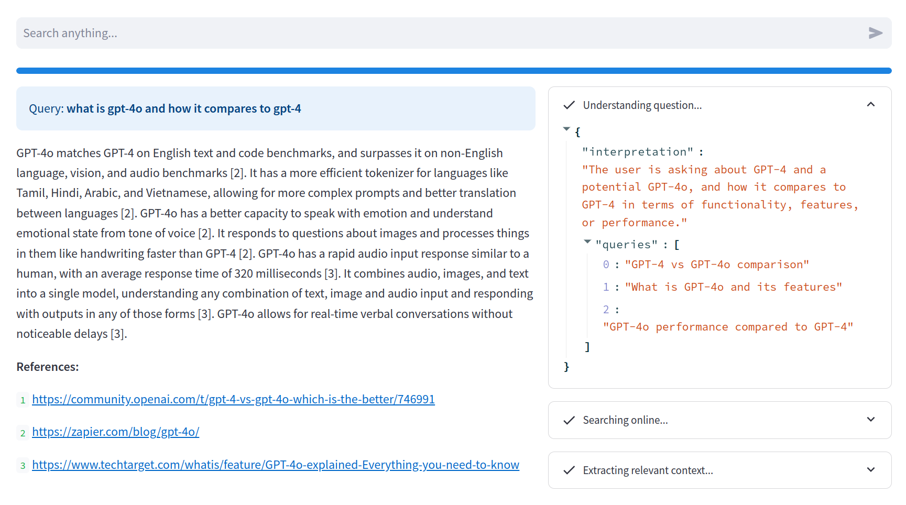

15 The Answer Engine
In this chapter we will continue our exploration of retrieval augmented generation, but zooming out to the widest possible scale. Instead of answering questions from a restricted domain, let’s tackle the opposite problem: a bot that can answer anything at all! The problem is our bot doesn’t know about everything that has happened in the world, and especially it doesn’t know about anything that has happened since its base pretraining.
But you know who does? Google! Well, not exactly everything, but a giant search engine like Google is the closest we have to a repository of the world’s knowledge. However, as everyone who’s ever used a traditional search engine knows, it is often not trivial to find the answer to your question. You have to sift through several of the search results and skim through their content1.
On the other hand, LLMs, even the most powerful and recent ones, are by definition static, in the sense that you cannot update their knowledge without some costly retraining. And even if you could, there is still a limit to how many raw facts they could learn and then retrieve flawlessly. As we’ve seen, LLMs are lousy remembering minute details like dates, and prone to subtle hallucinations.
So, how can we combine the language understanding and synthesis power of LLMs with the recency and breadth of knowledge of search engines?
With RAG, of course!
The plan
Keeping in line with the previous chapter, I will first explain at a broad level what is the workflow and the necessary functionalities for this app, and then we’ll go into implementation details. Since much of this demo builds on previous functionality, I won’t show you the whole code, only the novel parts. You can always check the full source code distributed with the book.
You can check a working version of this demo online at https://llm-book-search.streamlit.app.
This demo is provided on a best-effort basis and might be taking offline at any moment.
At a high level, this demo looks like a poor man’s search engine. We’ll have a simple search bar where the user can type a query. But actually, this isn’t just a search engine, it’s an answer engine! Instead of listing the matching websites, we’ll take it a step further and crawl those websites, read them, find a relevant snippet that answers the user query, and compute a natural language response with citations and all. Furthermore, we won’t even pass the exact user query to Google, but instead ask the LLM to suggest a small set of relevant queries that are more suitable for search.
Here is a screenshot of the final result, showing our answering engine talking about a recent news (the launch of GPT-4o) which happened way after it’s training:

Here is the general workflow:
- The user types a question.
- The LLM provides a set of relevant related queries.
- For each query, we obtain a set of search results from Google.
- For each search result, we crawl the webpage (if possible) and store the raw text.
- Given the original user question and the crawled text, we build a suitable context.
- The LLM answers the question with the provided context.
There are several problems we must solve to implement this workflow, and we will go over them one at a time.
Getting the relevant queries
The first step is to compute a set of relevant queries related to the user question. Why? Well, first, because the user question might not be the type of query that search engines are good at solving. If you’re using Google, this might be less of an issue. But if you apply this strategy to self-hosted traditional search engines, like ElasticSearch, they instead just use some fancy keyword-based retrieval, with no semantic analysis.
But more importantly, there simply might not be a single best document (or webpage) with an answer to the user question. For example, if the user asks about a comparison between two products, but there is no actual comparison in the data. All you have is separate documents describing each product. In this case, the best strategy is to perform separate queries for each product and let the LLM do the comparison, effectively leveraging the best of both paradigms.
Here is a prompt to achieve this. It’s a simple but effective combination of prompting strategies we saw in Chapter 6. At its core, this is a zero-shot instruction, but we also include a brief chain-of-thought to nudge the model into a more coherent answer structure. Finally, we instruct the model to produce a structured response so we can parse it more easily.
Given the following question, provide a set of {num_queries}
relevant Google queries that would answer the question.
For that, first think about the user query and provide
your own interpretation.
Then generate the relevant queries.
Question: {question}
Answer only with a JSON object containing a list of the relevant queries,
in the following format:
{{
"interpretation": "...",
"queries": [ ... ] # list of relevant queries
}}From this prompt, any reasonably tuned model will produce something like the following, for the query “what is gpt4-o and how does it compare to gpt4”:
{
"interpretation": "The user is asking about GPT-4 and
a potential GPT-4o, and how it compares to GPT-4
in terms of functionality, features, or performance.",
"queries": [
"GPT-4 vs GPT-4o comparison",
"What is GPT-4o and its features",
"GPT-4o performance compared to GPT-4"
]
}Notice that, from the interpretation, we can see the model “knows” what GPT-4 is but not what is GPT-4o. Yet, it produced pretty sensible search queries, including one individual query for GPT4-o, which is very close to what we would do if we were researching this subject on our own.
Implementing this structured response prompt in our system takes a bit more effort than just passing the prompt. The reason is we want to force the model as much as possible to produce a well-formed JSON object and, while careful prompting can get us pretty far, it is still possible for the model to deviate from just producing a JSON object, and adding some chatty messsages like “Of course, here is your JSON object:” which would make it harder to parse the response.
For this purpose, most OpenAI-compatible APIs implement something called JSON mode which forces the response to be a parseable JSON object. It won’t guarantee that you get the JSON structure you asked for (this is, in general, not solvable without modifying the sampling method) but it will guarantee that, if the model responds at all, it will be a well-formed JSON2.
To take advantage of this API feature in our implementation, we will add a JSON mode method to our Chatbot class, which also skips the conversation history workflow, because we usually don’t want these messages to be part of a traditional conversation, but rather use them for one-off instructions.
# File: utils.py
class Chatbot:
# ...
def json(self, content, context=0, model=None, retries:int=3):
messages = self.history(context)
# Build the message list, including the
# system message
messages.insert(0, ChatMessage(
role="system",
content=self.system_prompt)
)
messages.append(ChatMessage(role="user", content=content))
# Get the response
response = (
self.client.chat(
messages,
self.model,
# Explict JSON-mode response format
response_format=ResponseFormat(
type=ResponseFormats.json_object
),
)
.choices[0]
.message.content
)
# ...So far, this is a pretty standard setup, just adding the explicit JSON mode argument. However, this still does not ensure the response is in the right format, as the LLM might decide to change to keys–e.g., adding a ` symbol, or something else equally weird.
Likewise, even if the result is correct JSON, it might not have the structure you requested. While we cannot entirely guarantee the result, we can still make it easier for the LLM to answer correctly. We’ll do so in two steps. First, we will allow for a small number of retries, in case the first time the response is invalid.
class Chatbot:
# ...
def json(self, content, context=0, model=None, retries:int=3):
# ...
try:
result = json.loads(response)
# Attempt to parse the result into a dataclass
# to ensure a consistent schema
if model:
return _parse_dataclass(result, model)
return result
except:
# If the response fails to parse
# we print the original result for debugging
# and try again
print(response, flush=True)
if retries <= 0:
raise
return self.json(content, context, model, retries - 1)And second, we will allow the user to pass a dataclass type that defines the expected structure. If the JSON object doesn’t exactly matches the dataclass structure (because maybe key names have superfluos characters), we will allow some flexibility in the parsing.
def _parse_dataclass(json_obj, model):
result = dict()
for field in fields(model):
value = json_obj.get(field.name)
if not value:
for k,v in json_obj.items():
if field.name.lower() in k.lower():
value = v
break
if value:
result[field.name] = field.type(value)
return model(**result)The _parse_dataclass function expects a dict-like object and a type, which must be decorated as a dataclass. During the construction of the dataclass, we will first attempt to find an exact match for the fields of the class, and resort to approximate matching otherwise.
In the main application loop, we simply call this method and access the queries key to find the queries. We can define a Response class to ensure a schema.
@dataclass
class Response:
interpretation: str
queries: listSearching online
This is probably the easiest part of the demo. We can use any number of Google Search wrappers to obtain a list of web pages given a set of queries. In this case, I’m using googlesearch-python, which is one of the libraries with most Github stars, but feel free to experiment.
The first step is to combine all the results from the different queries into a single set so that we don’t crawl a web page twice.
queries = bot.json(
QUERY_PROMPT.format(question=user_query, num_queries=3),
model=Response,
retries=3,
)
urls = set()
for query in queries.queries:
search_results = list(
googlesearch.search(
query,
num_results=num_results,
advanced=True,
)
)
for i, result in enumerate(search_results):
urls.add(result.url)This isn’t the exact code in our application, because we’d have some streamlit-specific instructions in there to print some status messages while crawling.
The next step is to crawl each of these results, skipping the ones that fail (because they are either not HTML content, or take too long to load, etc.). We use BeautifulSoup to parse the HTML and obtain a blob of continuous text extracted from every HTML node that has any text at all. This isn’t the prettiest or most robust way to parse an HTML file, especially if you want to show it to a human, but for our purposes it works pretty well because the LLM will be able to sift through it and extract the relevant parts.
texts = []
for i, url in enumerate(urls):
try:
html = requests.get(url, timeout=3).text
if "<!DOCTYPE html>" not in html:
continue
text = bs4.BeautifulSoup(html, "lxml").get_text()
text = text.split()
if len(text) < 50:
continue
for j in range(0, len(text), chunk_size):
chunk = " ".join(text[j : j + chunk_size])
texts.append(chunk)
except:
passNotice that, at the same time we’re parsing the HTML, we split the resulting text in chunks of, say, 256 words, and store each chunk separately. You can probably already guess why, right?
Finding the right context
The next problem we have to solve is giving the LLM a reasonably short fragment of the relevant web pages where the answer to the user query might be. Depending on how you configure this demo, the search step might have extracted hundreds of chunks with thousands of words in total, many of which might be irrelevant. For example, you may be asking for a specific date of some event and get a whole Wikipedia page where that event is passingly mentioned in one of the paragraphs.
To solve this problem we will resort again to the most effective augmentation strategy, retrieval augmented generation, and our old friend the VectorStore class. We will index the extracted chunks on-the-fly and immediately extract the most relevant ones.
store = VectorStore()
store.add(texts)
chunks = [
dict(id=i+1, url=url_by_text[c], text=c)
for i, c in enumerate(store.search(query, k=num_chunks))
]The result of this snippet is a chunks list containing a small number of relevant chunks, formatted as Python dictionaries with the following structure:
{
"id": 1,
"url": "https://en.wikipedia.org/wiki/GPT-4o",
"text": "[...] is an AI model that [...]"
}The id field, computed as an incremental index, will be useful later on for printing explicit references.
Building the final response
All that’s left is formatting a proper RAG-enabled prompt and inject the relevant content extracted from in the previous step. Here is the prompt we’re using:
Here is an extract of relevant context from different web pages:
---
{chunks}
---
Given the provided search context, please answer the following user query.
For every substantive claim extracted from the context, please
provide between square brackets the corresponding chunk ID number,
such as [1], [2], etc.
Query: {input}Notice how we explicitly instruct the model to produce square-bracketed references whenever possible. The chunks we inject in the context are pretty printed JSON objects from the previous section that contain a convenient id field.
And that’s it, all that remains is a few streamlit-specific bells and whistles here and there to get this demo up and running. For example, we add a few numeric inputs to let the user play around with the parameters of the search (how many queries to perform, how many chunks to extract, etc.):
num_queries = st.sidebar.number_input(
"Number of different queries", 1, 10, 3)
num_results = st.sidebar.number_input
("Top K results to crawl", 1, 10, 3)
num_chunks = st.sidebar.number_input(
"Number of context chunks", 1, 10, 3)
chunk_size = st.sidebar.number_input(
"Chunk size (~tokens)", 128, 2048, 256)And, if you check the full source code, we also have a few instructions here and there to make this semi-fancy layout in two columns with a search bar at the top.
Conclusions
Retrieval augmented generation is an extremely versatile paradigm. In the previous chapter we saw the standard approach, using just vector-based retrieval from a static text source. In this chapter, we use a generic search engine as the data source, taking advantage of the massive complexities hidden behind what looks like a simple Google search. We’re leveraing years and years of innovation in collection, storage, and lightning fast retrieval from billions of web pages. We’re standing on the shoulders of giants, quite literally.
The structured response prompt pattern is crucial in this context, and we will continue to rely on this functionality the more tight we want to integrate and LLM with other tools. Thus, building this almost-certain flexible parsing strategy will pay off in future chapters. Keep in mind, thought, there is not way to absolutely guarantee (without changing the sampling process) that the output of an LLM matches any specific format.
You can adapt this demo to any search engine that provides a text search interface. A common use case is getting all your institutional knowledge in a self-hosted search-enabled database like ElasticSearch, and use it to build an in-house Q&A bot.
By now, you should be starting to see a pattern in this integration of large language models with other traditional technologies. We will use the model to both transform the user input into something structured that we can feed our underlying tool, compute some results, and then use the model again to produce a natural language response. This is why we talk about LLMs as a natural language user interface. It’s basically a wrapper for any traditional computational tool that adds a very convenient conversational input and output, but the basic computation is still performed by the tool.
This combination of LLMs with traditional tools helps bridging the gap between the incredible versatility of language models and the efficiency and robustness of more traditional tools, while minimizing (althought not entirely eliminating) many of the inherent limitations of LLMs like hallucinations and biases.
In future chapters, we will stretch this paradigm to its limits, making our LLM interact with all sorts of APIs and even produce its own executable code.
To be fair, Google has had synthetic answers for a while, and more recently, almost all search engines are incorporating explicit answer generation using… can you guess what? Yes, language models!↩︎
The way this works is pretty straightforward and naive. The response given by the model is simply passed through a JSON parser and all tokens that would break the parser are skipped. This means you still have to instruct the model explicitly to output JSON or you could get an empty response.↩︎